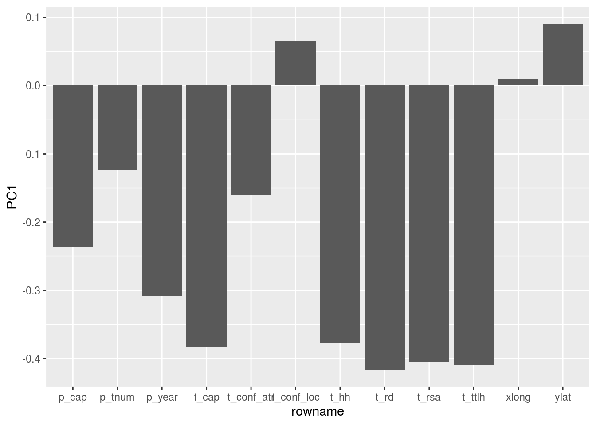
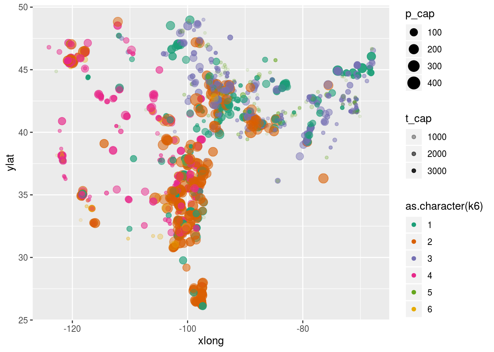
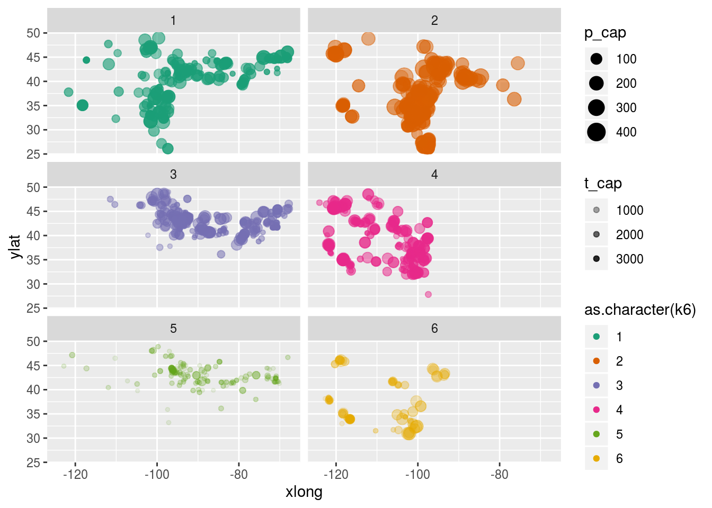
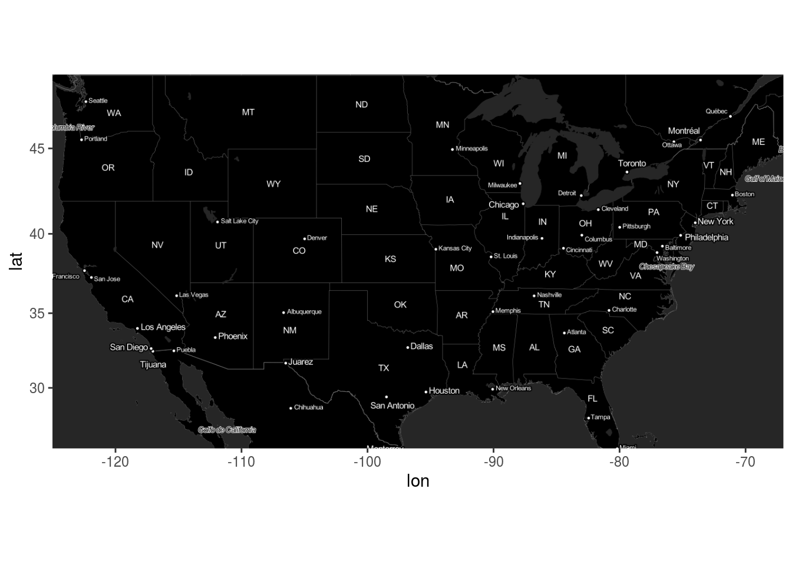
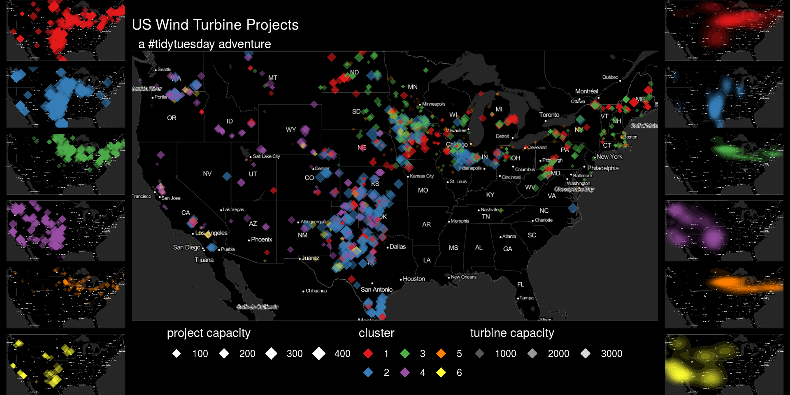

Tidy Tuesday: USA Wind Power
Load Data
Reduce Dimensionality
Do a PCA
Looks like PC1 makes up the bul of the difference, and it is due to turbine rotor sweep area
dat.pca <- prcomp(dat.p.num, center = TRUE, scale. = TRUE)
summary(dat.pca)## Importance of components:
## PC1 PC2 PC3 PC4 PC5 PC6 PC7
## Standard deviation 2.3420 1.3762 1.00832 0.98379 0.94979 0.86079 0.7040
## Proportion of Variance 0.4571 0.1578 0.08473 0.08065 0.07517 0.06175 0.0413
## Cumulative Proportion 0.4571 0.6149 0.69963 0.78028 0.85546 0.91720 0.9585
## PC8 PC9 PC10 PC11 PC12
## Standard deviation 0.53133 0.35791 0.27616 0.10600 0.01020
## Proportion of Variance 0.02353 0.01067 0.00636 0.00094 0.00001
## Cumulative Proportion 0.98202 0.99270 0.99905 0.99999 1.00000dat.pca$rotation %>% as.data.frame() %>% rownames_to_column() %>%
ggplot(aes(y = PC1, x = rowname)) +
geom_col()
Some plots
dat.p.num %>%
bind_cols(as.tibble(dat.pca$x)) %>%
ggplot(aes(x = xlong, ylat, color = PC1, size = p_cap, alpha = t_cap)) +
scale_color_viridis_c() +
geom_point()## Warning: `as.tibble()` is deprecated, use `as_tibble()` (but mind the new semantics).
## This warning is displayed once per session.
Cluster
## Use the PCs that explain 95% of the variance
dat.k <- dat.pca$x %>% as.tibble %>%
select(1:7) %>%
mutate(
k2 = kmeans(., 2)$cluster,
k3 = kmeans(., 3)$cluster,
k4 = kmeans(., 4)$cluster,
k5 = kmeans(., 5)$cluster,
k6 = kmeans(., 6)$cluster
) %>% bind_cols(dat.p.num)Cluster Plots
dat.k %>%
ggplot(aes(x = xlong, ylat, color = as.character(k6), size = p_cap, alpha = t_cap)) +
scale_color_brewer(palette = "Dark2") +
geom_point()
dat.k %>%
ggplot(aes(x = xlong, ylat, color = as.character(k6), size = p_cap, alpha = t_cap)) +
scale_color_brewer(palette = "Dark2")+
geom_point() +
facet_wrap(~ as.character(k6), nrow = 3)
Make a pretty map under the data
library(ggmap)
invert <- function(M) {
i <- function(x){rgb(t(255-col2rgb(x))/255)}
m <- M %>% apply(2, i) %>% as.raster()
class(m) <- class(M)
attr(m, "bb") <- attr(M, "bb")
return(m)
}
us <- c(left = -125, bottom = 25.75, right = -67, top = 49)
m <- get_stamenmap(us, zoom = 5, maptype = "toner-lite")
ggmap(invert(m))
Plots
plot.points <- ggmap(invert(m), extent = 'device') +
geom_point(aes(x = xlong, y = ylat, color = as.character(k6), size = p_cap, alpha = t_cap), data = dat.k, pch = 18) +
scale_color_brewer(palette = "Set1") +
facet_wrap(~k6, ncol = 1) +
theme_void() +
theme(legend.position = 'none', strip.text = element_blank()) +
theme(plot.background = element_rect(fill = "black", color = "black"),
panel.background = element_rect(fill = NULL))
plot.density <- ggmap(invert(m), extent = 'device') +
stat_density2d(aes(x = xlong, y = ylat, alpha = ..level.., fill = as.character(k6), color = NULL), data = dat.k, geom = "polygon") +
scale_fill_brewer(palette = "Set1") +
facet_wrap(~k6, ncol = 1) +
theme_void() +
theme(legend.position = 'none', strip.text = element_blank()) +
theme(plot.background = element_rect(fill = "black", color = "black"),
panel.background = element_rect(fill = NULL))
plot.all <- ggmap(invert(m), extent = 'device') +
geom_point(aes(x = xlong, y = ylat, color = as.character(k6), size = p_cap, alpha = t_cap), data = dat.k, pch = 18) +
scale_color_brewer(palette = "Set1") +
guides(
size = guide_legend(title = "project capacity",title.position = 'top', override.aes = list(color = "white")),
alpha = guide_legend(title = "turbine capacity",title.position = 'top', override.aes = list(color = "white", size = 4)),
color = guide_legend(title = 'cluster', title.position = 'top', override.aes = list(size = 4))
) +
ggtitle("US Wind Turbine Projects", " a #tidytuesday adventure") +
theme_void() +
theme(title = element_text(color = 'white'),
legend.position = 'bottom',
legend.background = element_blank(),
legend.text = element_text(color = "white"),
legend.title = element_text(color = "white"),
legend.key = element_blank(),
axis.text = element_blank(),
axis.title = element_blank(),
plot.background = element_rect(fill = "black", color = "black"),
panel.background = element_rect(fill = NULL))Squish together
library(cowplot)##
## ********************************************************## Note: As of version 1.0.0, cowplot does not change the## default ggplot2 theme anymore. To recover the previous## behavior, execute:
## theme_set(theme_cowplot())## ********************************************************##
## Attaching package: 'cowplot'## The following object is masked from 'package:ggmap':
##
## theme_nothingfinal.plot <- plot_grid(plotlist = list(plot.points, plot.all, plot.density), nrow = 1, rel_widths = c(.25,1,.25))
ggdraw(final.plot) +
theme(plot.background = element_rect(fill = "black", color =
"black"))